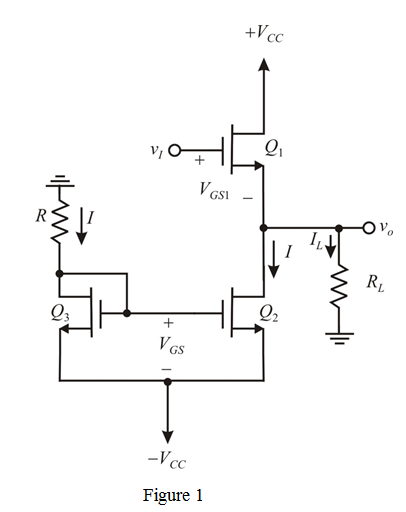

The bias current is,
…… (1)
The gate to source voltage is,
Substitute  and .
and .
Substitute for in equation (1).
Solve the equation.
Therefore, the reasonable current  is .
is .
The source follower circuit is shown in Figure 1.

The bias current is,
…… (1)
The gate to source voltage is,
Substitute and .
Substitute for in equation (1).
Solve the equation.
Therefore, the reasonable current is .
The gate to source voltage is,
Substitute  , for
, for  and .
and .
If the transistor  enters the triode region, it results in maximum output voltage.
enters the triode region, it results in maximum output voltage.
For transistor entering the triode region the input is,
Substitute , .
Therefore, the maximum output is,
The current in the transistor  is,
is,
The gate source voltage of transistor  is,
is,
The maximum output voltage is,
Therefore, the upper limit of the output is and the corresponding input is
.
If the transistor  is in cut-off region then the minimum output voltage is obtained.
is in cut-off region then the minimum output voltage is obtained.
The minimum output voltage is,
The minimum output voltage is obtained by the transistor  going out of saturation.
going out of saturation.
The minimum output voltage is,
Therefore, the minimum output voltage is.
The minimum input voltage is,
Therefore, the lower limit of the output is and the corresponding input is
.